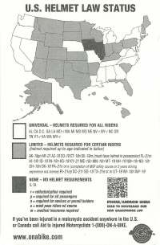
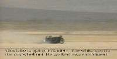
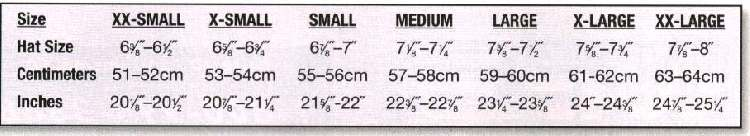
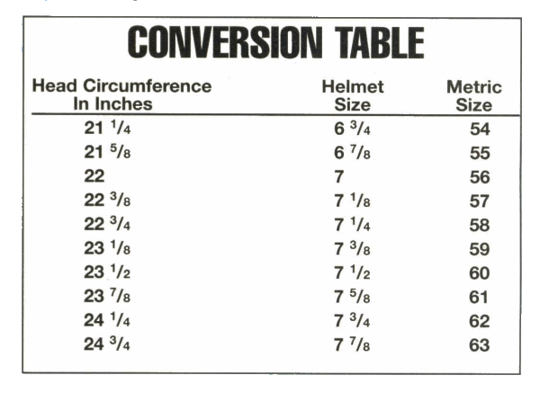
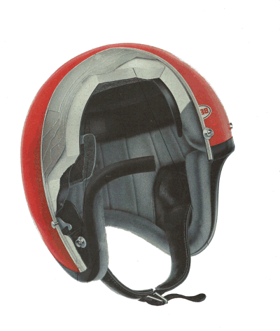
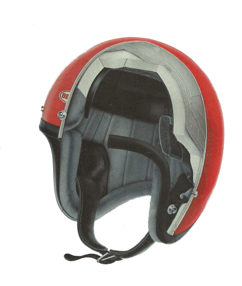

MOTORCYCLE HELMETS


but the simple pass on, and are punished"
Proverbs 27:12
¶ Like it or not motorcycle riding does entail some risk... just like everything else. In every statistical report I have ever read, the figures are always the same. In all fatal accidents about 80% of the deaths were caused by head injuries. This is true of both motorcycles and, get this, CARS. It doesn't take a rocket scientist to figure this one out. Be prudent... foresee evil... hide yourself from it... wear a Helmet.
Now, I'm 100% against Mandatory Helmet Laws for adults, but if you ride and don't wear a helmet, you are doing a foolish thing. There are some who say the weight of the helmet can break your neck or that it hurts your peripheral vision. What a load of BS. If you are hit hard enough to break your neck it would have splattered your head without the helmet. Either way you are dead. For the other, just turn your head... Duh! Sorry if I offend.


If you don't want to wear a helmet, be a man (or woman!), and just say you prefer not to wear one and will live with the risk. Don't give a lot of BS that it's safer without one. If it was safer, racers would not be wearing them. Speaking of racers, I have a number of photographs of racers sliding on their helmets. The majority were able to pick up their bikes and keep going. I have NO pictures of anyone sliding on their heads, without a helmet, and living.
Several years ago a young man, about 18, came into my shop. I had a junkie, old, used helmet and he bought it, along with a flat face shield. About a week later he came back in to get another flat shield. Seems he fell off on a dirt road corner and ruined the other one. Said his head was still ringing. We tried to put it on but one of the side snaps just would not line up. We started looking at that helmet. There wasn't a scratch on it. It looked good. But if you looked at it just the right way it was real obvious. The whole side was caved in. It had saved his life. Think about it. Like the Bible says. Look ahead, see the danger, and prepare for it.
Here's another thought on safety. You will notice that almost all veteran riders wear leather. Truth be known, if you ride long enough, you're going to fall off. Just a fact of life... live with it. In the event of a spill, Leather gloves, jacket and pants, will make things much easier to take. Don't forget good leather shoes. Many is the time I've saved myself from a fall with a good dab with my foot. If you are wearing a thong sandal... ?
I see guys, all the time, riding around on 160 MPH bikes with nothing on but shorts and thongs. They might as well tattoo a big "I'm a CHERRY" on their backs. I hate looking like a newbe, but I guess these guys think it's cool. Raspberries on your hide are not cool. What are raspberries? Hit the pavement once without leather and you'll find out.
While you will want to wear the best helmet you can, anything is better than nothing.
Here are some links, if you want to learn more.
Snell Foundation ...Helmet testing.
Department Of Transportation ...DOT Motorcycle safety PDF.


I, in my foolish youth, once lived in good, ol' Southern California. Down there everyone splits lanes. No one ever seemed to get hurt. Now, they did get a lot of drivers mad at them but I got to admit, if you split lanes, it is not as dangerous as it looks. I never did it, call me a wimp, it just never looked like a good idea.
I just read a report from the University of California Berkeley. Seems it really is not as dangerous as I had thought. Who would have thunk it? If you would like to read the report Click Here

 |
 |
Copyright © 1999-2016 dansmc.com. All rights reserved.